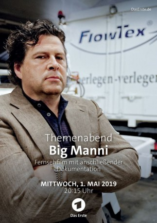

gesehen am 09.05.2019
gesehen am 09.05.2019Alternativ: Themenabend Big Manni gesehen am 09.05.2019
 
 IMDB-Wertung: 6.7 / 10
IMDB-Wertung: 6.7 / 10  Metascore:
Metascore: 
Für den regional erfolgreichen Unternehmer Manfred Brenner (Hans-Jochen Wagner) könnte es Mitte der 1980er Jahre wahrlich besser laufen. Für Brenner jedoch kein Grund zur Sorge, denn er rechnet fest mit einem Durchbruch mit seiner neu gegründeten Firma FlowTex. Diese soll mit neuartigen Horizontalbohrsystemen den Rohrleitungsbau im Untergrund revolutionieren. Als der große Erfolg jedoch ausbleibt, muss Brenner auf Zeit spielen. Und es klappt, indem er mit gefälschten Aufträgen und mit Bohrsystemen, die gar nicht existieren, arbeitet. Mit Charme und seiner Überzeugungskraft schafft es Brenner, Kredite und Leasingverträge anzuhäufen. Niemand bemerkt, dass er sich mit Lügen und gefälschten Unterlagen ein ganzes Firmenkonstrukt aufgebaut hat. Erst als sein ehemaliger Klassenkamerad, Kommissar Bärlach (Felix Eitner), anfängt, Fragen zu stellen, beginnt sein gewaltiges Lügenimperium zu bröckeln.
Jahr: 2019
Dauer: 88 Minuten
FSK:
Land: Deutschland Studio: ARDTonspuren:
Untertitel:
Auflösung: 720p (1280x720) Größe: 1853 MB
Regisseur: Niki Stein
Drehbuch: Johannes W. Betz, Jürgen Rennecke
Soundtrack:
Darsteller:
 Dieter Rupp als Zivilpolizist
Dieter Rupp als Zivilpolizist Robert Schupp als Stoschek
Robert Schupp als Stoschek Patrick von Blume als Rettinger
Patrick von Blume als RettingerDatei: X:\2019(A-F)\Big Manni (2019, FSK, 1280x720).mkv seit 09.05.2019
Festplatte: HD 2018(G-Z)-2019(A-Z)
 Es gibt insgesamt 60 Filme in der Gruppe '2019(A-F)'
Es gibt insgesamt 60 Filme in der Gruppe '2019(A-F)'